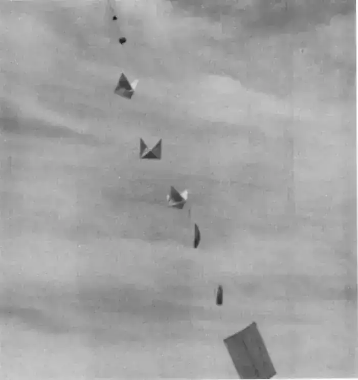
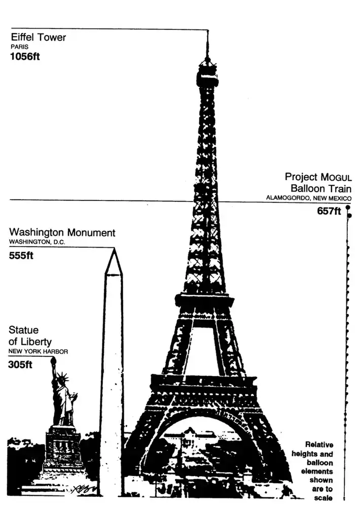

The event
In July 1947 a rancher found debris on a field near Roswell, New Mexico: foil, rubber strips, sticks and tape. The local air base issued a press release describing a 'flying disc', then retracted it the next day, saying it was a weather balloon. The story was forgotten for thirty years.
Maps, diagrams and images




The explanation
Project Mogul was a classified programme that used long trains of balloons carrying microphones to detect Soviet nuclear tests. The arrays were launched from Alamogordo, and one was lost near Roswell. The materials match the debris description exactly, and the secrecy explains the retraction and the refusal to give details at the time.
A 1994 Air Force report identified the debris as Mogul flight no. 4. The alien bodies and the cover-up narrative entered the literature in the late 1970s and 1980s, after the witnesses had been interviewed repeatedly.
Documented: the debris, the press release and the retraction.
Documented: Project Mogul, its purpose and its flights.
Documented: the 1994 identification.
Not established: any craft or bodies.
The label: documented — a real secret programme, and not the one claimed.
Why it is in the archive
Because it is the case where the conspiracy is real and the subject is wrong: there was a cover-up, of a balloon.
Open resources on this topic
- PapersOpen-access articles: DOAJ · PubMed Central · Internet Archive Scholar
- BooksPublic-domain and borrowable copies: Open Library · Project Gutenberg · Google Books · Internet Archive
More images
Cite this page
Momin, S. (2026). Roswell Was Project Mogul. The Larger World Archive. https://drsamonline.github.io/LARGE_GLOBE/roswell-mogul.htmlMomin, Sohil. “Roswell Was Project Mogul.” The Larger World Archive, 2026, https://drsamonline.github.io/LARGE_GLOBE/roswell-mogul.html.Momin, Sohil. “Roswell Was Project Mogul.” The Larger World Archive, 2026. https://drsamonline.github.io/LARGE_GLOBE/roswell-mogul.html.@misc{roswell2026roswell,
author = {Momin, Sohil},
title = {Roswell Was Project Mogul},
year = {2026},
howpublished = {The Larger World Archive},
url = {https://drsamonline.github.io/LARGE_GLOBE/roswell-mogul.html},
note = {Last reviewed 20 November 2026}
}Last reviewed 20 November 2026 · Corrections policy · this page is not peer reviewed
Sources for this page
- Wikipedia, “Roswell incident” — the event and the explanationsen.wikipedia.org
- Wikipedia, “Project Mogul” — the real programmeen.wikipedia.org
- Wikipedia, “Balloon (aeronautics)” — the technologyen.wikipedia.org
- Wikipedia, “Nuclear weapons testing” — what Mogul was watching foren.wikipedia.org